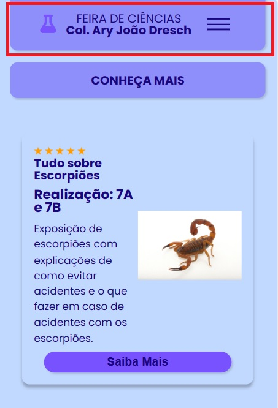

O projeto
O App Mobile da Feira de Ciências do Colégio Ary João Dresch, foi um projeto proposto durante as aulas de programação Front-End pelos alunos do 2 ano do curso técnico em desenvolvimento de sistemas. Todo o projeto foi criado a partir de exemplos e elemtos HTML e CSS aprendidos durante as aulas.
Inicialemente temos um menu lateral onde podemos acessar todas as informações disponíveis sobre a Feira de Ciências.
Em seguida temos um botão CONHEÇA MAIS que nos leva a apresentação dos alunos responsáveis pelo aplicativo da Feira de Ciências.
Em seguida temos uma seção de Cards que exibem todos os destaques da Feira de Ciencias.
Conheça as principais telas do nosso APP

O menu de navegação
Nosso aplicação contém um painel de navegação principal que permite o acesso rápido a vários temas e assuntos da Feira de Ciência. Por meio dele é possível acessar de forma rápida todos o conteúdo disponível na aplicação
Conheça as principais telas do nosso APP

O menu de navegação
A barra de navegação pode ser ocultada clicando novamente no menu-hamburguer ao lado direito da tela
Conheça as principais telas do nosso APP

Conheça Mais
Nesta tela podemos conhecer um pouco mais sobre os desenvolvedores do aplicativo da Feira de Ciências
Conheça as principais telas do nosso APP

Sobre os Destaques da Feira de Ciências
Na tela principal pode ser encontrado os Cards de destaque da Feira, neles vc encontra o título da oficina que será apresentado, a série que esta realizando a oficina e ainda uma breve descrição sobre a oficina.
Conheça as principais telas do nosso APP